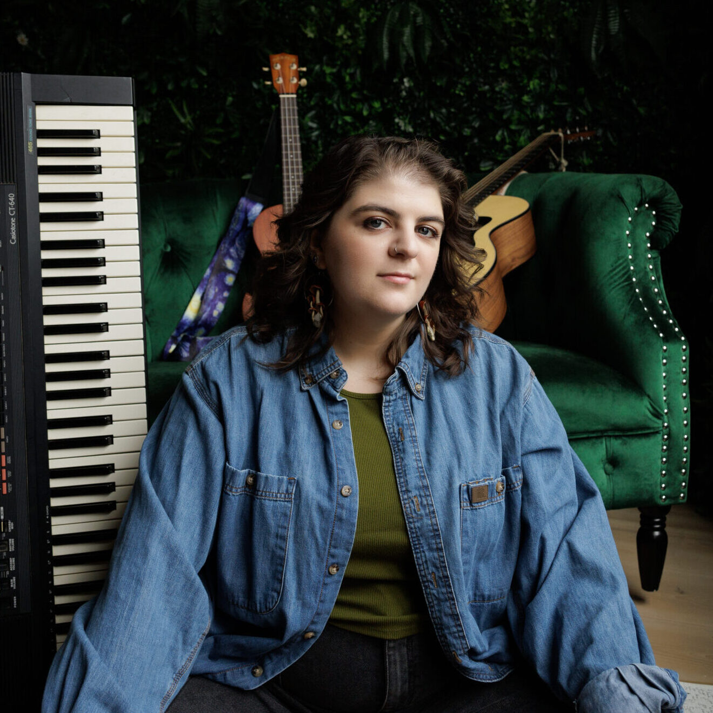
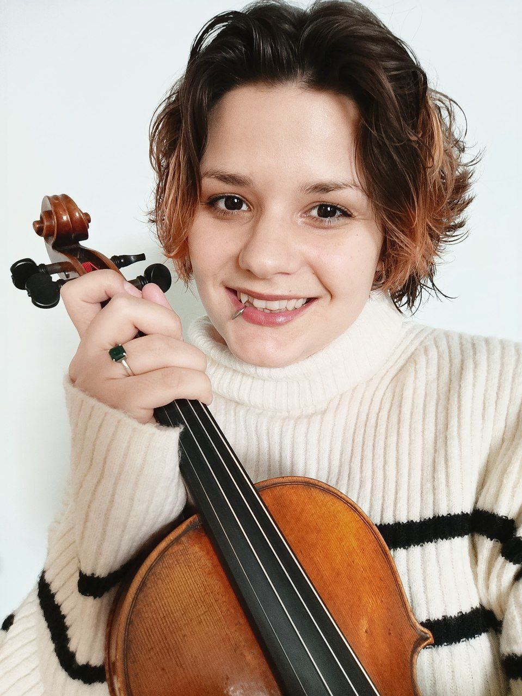

Hello! My name is Ava Lynn and I am a musician. I play the piano, guitar, and drums. I have been playing music for over 10 years and I love to perform. I have been teaching music for the past 5 years. If you are interested in learning music, please submit a form through this website and include that you are interested in learning with me. Thank you for visiting Band Builder!

Hello! My name is Jessie Doe and I am a musician. I play the violin and I have been playing for over 5 years. I love to perform and I am always looking for new teaching opportunities and to collaborate with other musicians. If you are interested in working with me, please contact me through the form on this website. Thank you for visiting Band Builder!
Hello! My name is John Smith and I am a musician. I play the guitar and I have been playing for over 15 years. I love teaching and I always look for new opportunities to share my knowledge with others. If you are interested in working with me, please contact me through the form on this website. Thank you for visiting Band Builder!